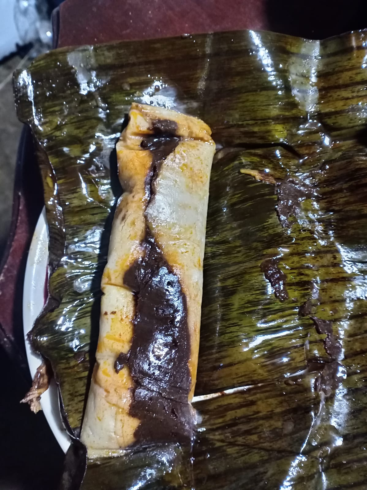
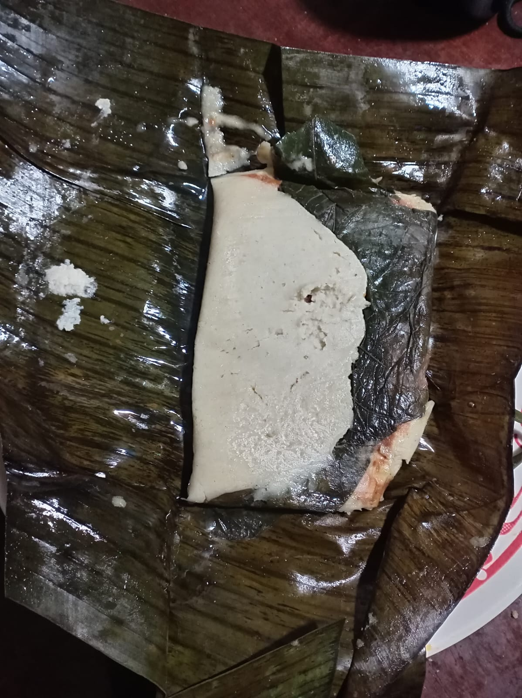
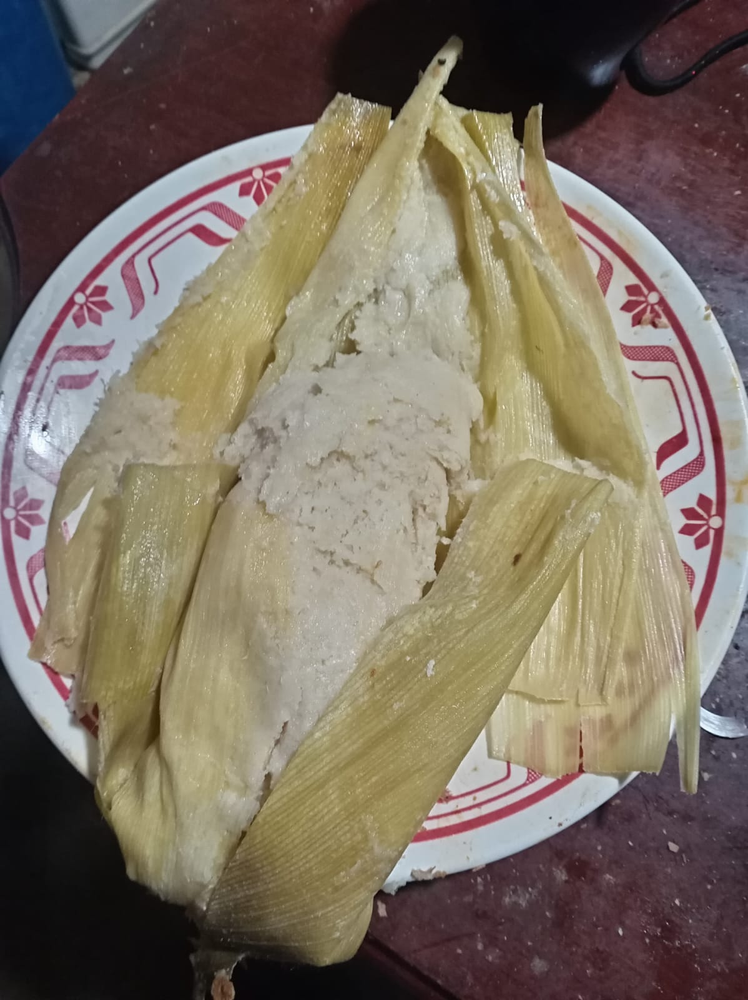
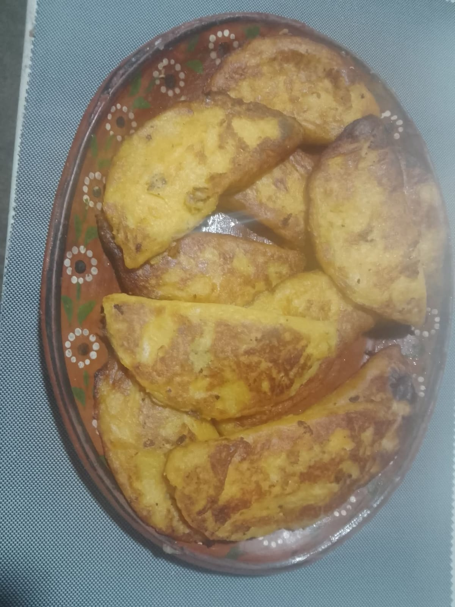

Nuestra Selección de Tamales
Tamal de chipilín
El tradicional tamal de chipilín con pollo en salsa de tomate, envuelto en hoja de plátano.

Tamal de cambray
El tradicional tamal de cambray en hoja de plátano.

Hoja santa
Tamal de hoja santa, relleno de frijol con chipotle.

Elote (Dulce)
Para el postre. Elote. Perfecto para acompañar tu atole.

Empanadas de plátano
Combinación de plátano macho, rellenas de frijol o queso cotija. $ 30.00.